Chapitre 4 Visualisation avec ggplot2
Il est souvent nécessaire d’utiliser des techniques de visualisation au cours des différentes étapes d’un projet en science des données. Un des avantages de R est qu’il est relativement simple de mettre en œuvre tous les types de graphes généralement utilisés. Dans cette partie, nous présentons tout d’abord les fonctions classiques qui permettent de tracer des figures. Nous proposons ensuite une introduction aux graphes ggplot qui sont de plus en plus utilisés pour faire de la visualisation.
4.1 Fonctions graphiques conventionnelles
Pour commencer il est intéressant d’examiner quelques exemples de représentations graphiques construits avec R. On peut les obtenir à l’aide de la fonction demo.
demo(graphics)4.1.1 La fonction plot
C’est une fonction générique que l’on peut utiliser pour représenter différents types de données. L’utilisation standard consiste à visualiser une variable y en fonction d’une variable x. On peut par exemple obtenir le graphe de la fonction \(x\mapsto \sin(2\pi x)\) sur \([0,1]\), à l’aide de
x <- seq(-2*pi,2*pi,by=0.05)
y <- sin(x)
plot(x,y) #points (par défaut)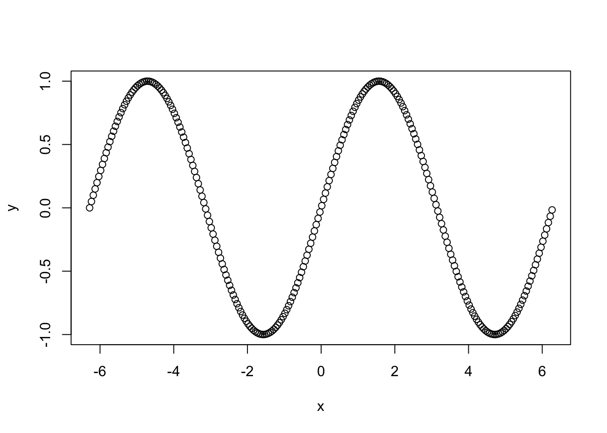
plot(x,y,type="l") #représentation sous forme de ligne
Nous proposons des exemples de représentations de variables quantitatives et qualitatives à l’aide du jeu de données ozone.txt que l’on importe avec
ozone <- read.table("data/ozone.txt")
summary(ozone)
maxO3 T9 T12
Min. : 42.00 Min. :11.30 Min. :14.00
1st Qu.: 70.75 1st Qu.:16.20 1st Qu.:18.60
Median : 81.50 Median :17.80 Median :20.55
Mean : 90.30 Mean :18.36 Mean :21.53
3rd Qu.:106.00 3rd Qu.:19.93 3rd Qu.:23.55
Max. :166.00 Max. :27.00 Max. :33.50
T15 Ne9 Ne12
Min. :14.90 Min. :0.000 Min. :0.000
1st Qu.:19.27 1st Qu.:3.000 1st Qu.:4.000
Median :22.05 Median :6.000 Median :5.000
Mean :22.63 Mean :4.929 Mean :5.018
3rd Qu.:25.40 3rd Qu.:7.000 3rd Qu.:7.000
Max. :35.50 Max. :8.000 Max. :8.000
Ne15 Vx9 Vx12
Min. :0.00 Min. :-7.8785 Min. :-7.878
1st Qu.:3.00 1st Qu.:-3.2765 1st Qu.:-3.565
Median :5.00 Median :-0.8660 Median :-1.879
Mean :4.83 Mean :-1.2143 Mean :-1.611
3rd Qu.:7.00 3rd Qu.: 0.6946 3rd Qu.: 0.000
Max. :8.00 Max. : 5.1962 Max. : 6.578
Vx15 maxO3v vent
Min. :-9.000 Min. : 42.00 Length:112
1st Qu.:-3.939 1st Qu.: 71.00 Class :character
Median :-1.550 Median : 82.50 Mode :character
Mean :-1.691 Mean : 90.57
3rd Qu.: 0.000 3rd Qu.:106.00
Max. : 5.000 Max. :166.00
pluie
Length:112
Class :character
Mode :character
On visualise tout d’abord 2 variables quantitatives à l’aide d’un nuage de points : la concentration en ozone maximale maxO3 en fonction de la température à 12h T12.
plot(ozone[,"T12"],ozone[,"maxO3"])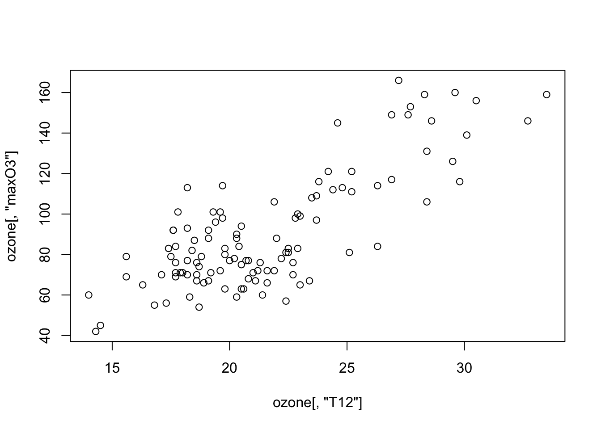
Comme les deux variables appartiennent au même jeu de données, on peut obtenir la même représentation à l’aide d’une sytaxe plus claire qui ajoute automatiquement les noms des variables sur les axes :
plot(maxO3~T12,data=ozone)Une autre façon de faire (moins naturelle) :
plot(ozone[,"T12"],ozone[,"maxO3"],xlab="T12",ylab="maxO3")
Il existe des fonctions spécifiques pour chaque type de graphes, par exemple histogram, barplot et boxplot :
hist(ozone$maxO3,main="Histogram")
barplot(table(ozone$vent)/nrow(ozone),col="blue")
boxplot(maxO3~vent,data=ozone)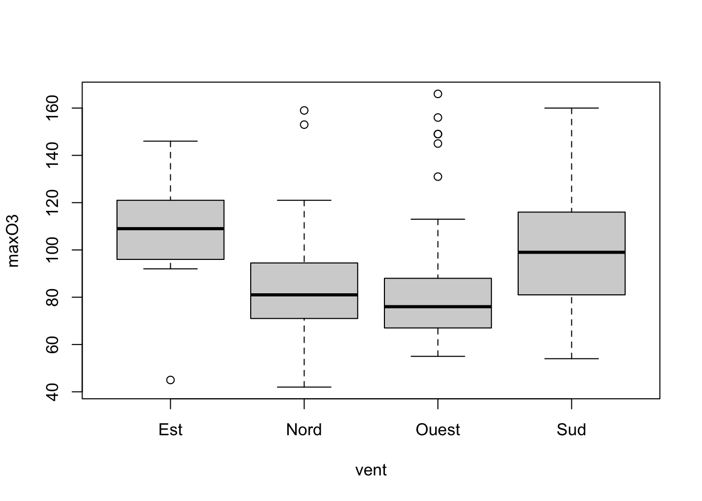
4.1.2 Graphes interactifs avec rAmCharts
On peut utiliser ce package pour obtenir des graphes dynamiques. L’utilisation est relativement simple, il suffit d’ajouter le préfixe am devant le nom de la fonction :
library(rAmCharts)
amHist(ozone$maxO3)4.1.3 Quelques exercices
Exercice 4.1 (Premier graphe) On s’intéresse à quelques graphes simples.
Tracer la fonction sinus entre \(0\) et \(2\pi\).
x <- seq(0,2*pi,length=1000) plot(x,sin(x),type="l")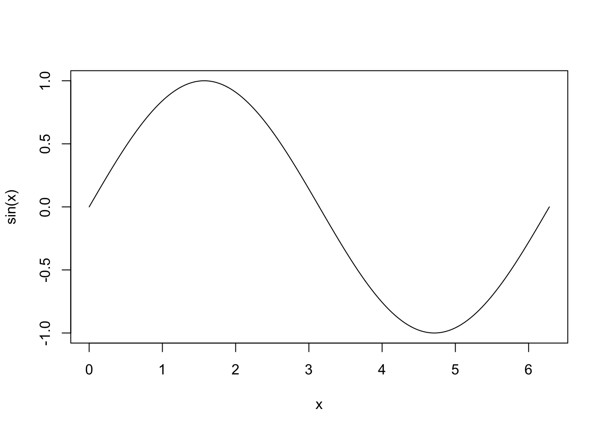
A l’aide de la fonction title ajouter le titre Représentation de la fonction sinus.
title("Représentation de la fonction sinus")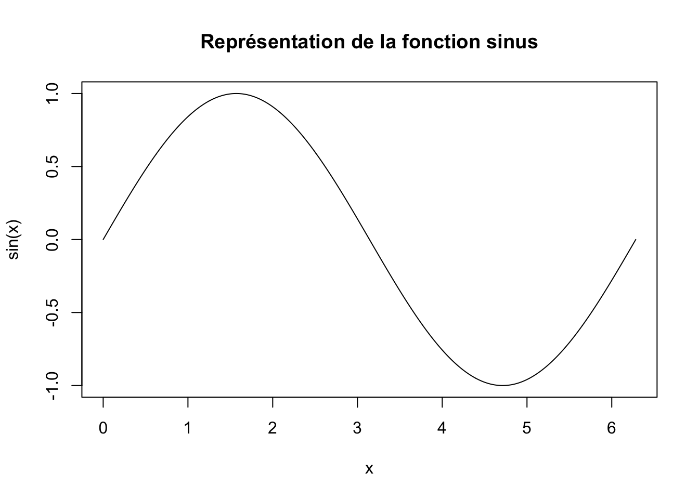
Exercice 4.2 (Tracé de densités) On souhaite ici visualiser et comparer des densités de probabilité.
Tracer la densité de la loi normale centrée réduite entre \(-4\) et 4 (utiliser dnorm).
x <- seq(-4,4,by=0.01) plot(x,dnorm(x),type="l")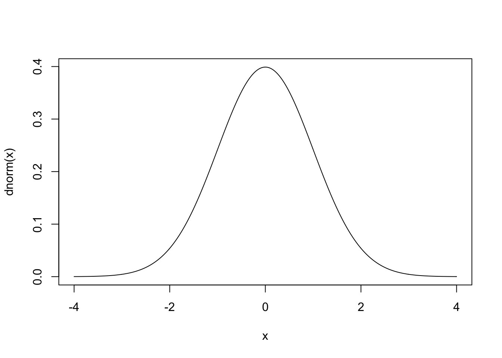
Ajouter une ligne verticale (en tirets) qui passe par \(x=0\) (utiliser abline avec lty=2).
abline(v=0,lty=2)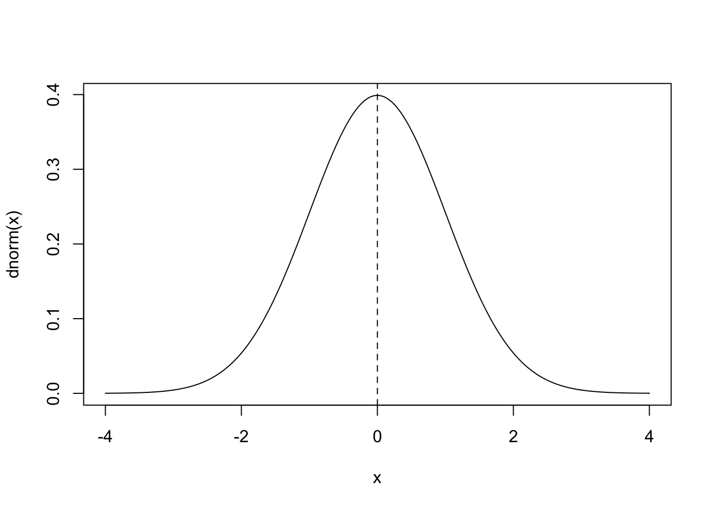
Sur le même graphe, ajouter les densités de loi la de Student à 5 et 30 degrés de liberté (utiliser dt). On utilisera la fonction lines et des couleurs différentes pour chaque densité.
lines(x,dt(x,5),col=2) lines(x,dt(x,30),col=3)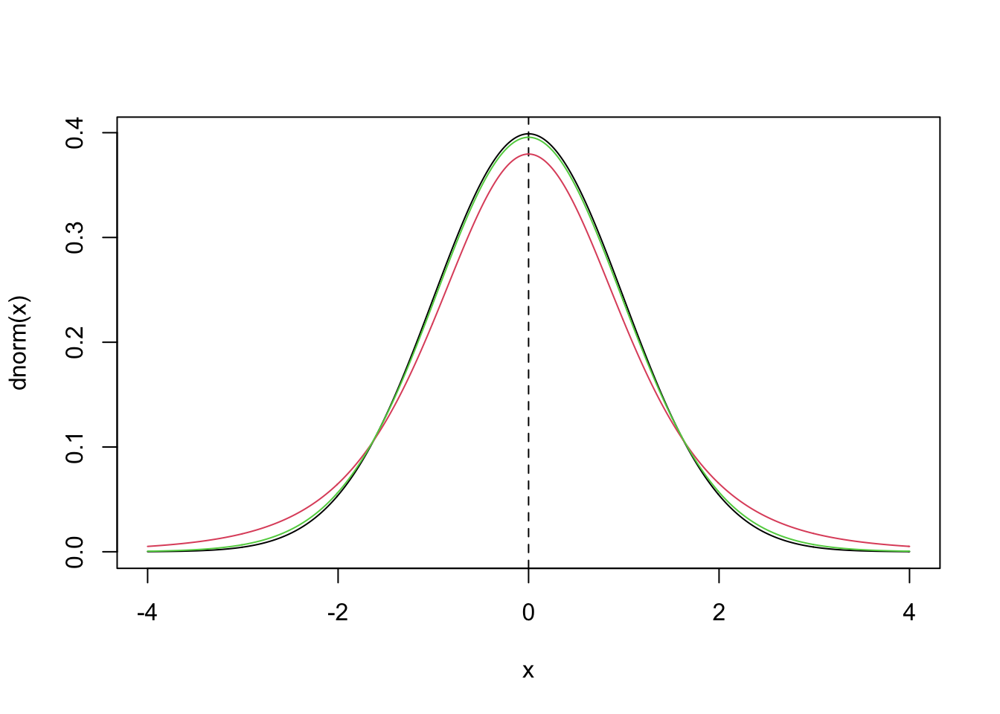
Ajouter une légende qui permet de repérer chaque densité (fonction legend).
legend("topleft",legend=c("Normal","Student(5)","Student(30)"), col=1:3,lty=1)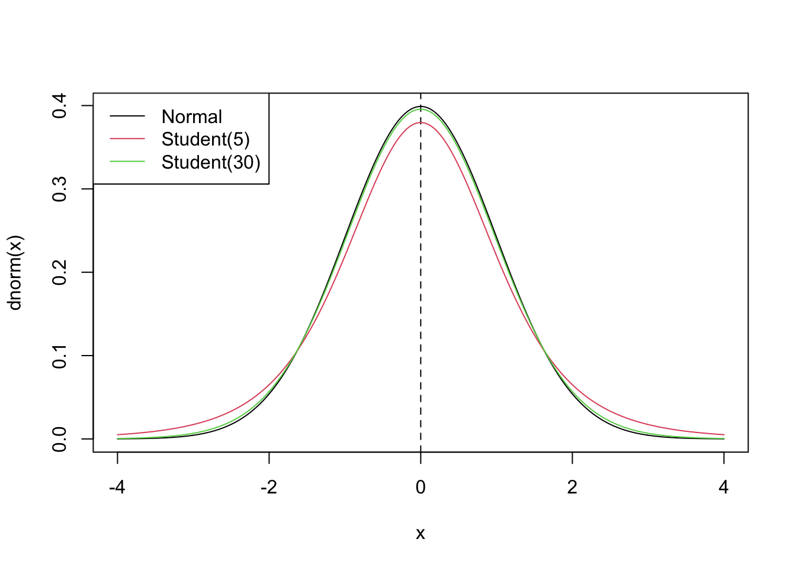
Exercice 4.3 (Tâches solaires) On souhaite ici visualiser une série.
Importer la série taches_solaires.csv qui donne, date par date, un nombre de taches solaires observées.
taches <- read.table("data/taches_solaires.csv",sep=";",header=TRUE,dec=",")A l’aide de la fonction cut_interval du tidyverse créer un facteur qui sépare l’intervalle d’années d’observation en 8 intervalles de tailles à peu près égales. On appellera periode ce facteur.
library(tidyverse) periode <- cut_interval(taches$annee,n=8)Utiliser les levels suivants pour le facteur periode.
couleurs <- c("yellow", "magenta", "orange", "cyan", "grey", "red", "green", "blue")levels(periode) <- couleursExpliquer la sortie de la fonction
coordx <- seq(along=taches[,1])On crée une séquence avec un pas de 1 de longueur égale à la dimension de
taches[,1].Visualiser la série du nombre de taches en utilisant une couleur différente pour chaque période.
plot(coordx,taches[,1],xlab="Temps",ylab="Nombre de taches", col=periode,type="p",pch="+")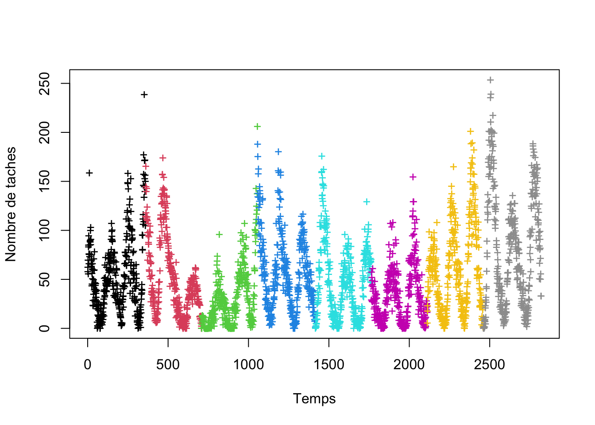
Exercice 4.4 (Layout) On reprend le jeu de données sur l’ozone. A l’aide de la fonction layout séparer la fenêtre graphique en deux lignes avec
un graphe sur la première ligne (nuage de points maxO3 vs T12)
2 graphes sur la deuxième ligne (histogramme de T12 et boxplot de maxO3).
layout(matrix(c(1,1,2,3), 2, 2, byrow = TRUE)) plot(maxO3~T12,data=ozone) hist(ozone$T12) boxplot(ozone$maxO3)
4.2 La grammaire ggplot2
Ce package propose de définir des graphes sur R en utilisant une grammaire des graphiques (tout comme dplyr pour manipuler les données). On peut trouver de la documentation sur ce package aux url http://ggplot2.org et https://ggplot2-book.org.
4.2.1 Premiers graphes ggplot2
Nous considérons un sous échantillon du jeu de données diamonds du package ggplot2 (qui se trouve dans le tidyverse).
library(tidyverse)
set.seed(1234)
diamonds2 <- diamonds[sample(nrow(diamonds),5000),]
summary(diamonds2)
carat cut color clarity
Min. :0.2000 Fair : 158 D: 640 SI1 :1189
1st Qu.:0.4000 Good : 455 E: 916 VS2 :1157
Median :0.7000 Very Good:1094 F: 900 SI2 : 876
Mean :0.7969 Premium :1280 G:1018 VS1 : 738
3rd Qu.:1.0400 Ideal :2013 H: 775 VVS2 : 470
Max. :4.1300 I: 481 VVS1 : 326
J: 270 (Other): 244
depth table price
Min. :43.00 Min. :49.00 Min. : 365
1st Qu.:61.10 1st Qu.:56.00 1st Qu.: 945
Median :61.80 Median :57.00 Median : 2376
Mean :61.76 Mean :57.43 Mean : 3917
3rd Qu.:62.50 3rd Qu.:59.00 3rd Qu.: 5294
Max. :71.60 Max. :95.00 Max. :18757
x y z
Min. : 0.000 Min. :3.720 Min. :0.000
1st Qu.: 4.720 1st Qu.:4.720 1st Qu.:2.920
Median : 5.690 Median :5.700 Median :3.520
Mean : 5.728 Mean :5.731 Mean :3.538
3rd Qu.: 6.530 3rd Qu.:6.520 3rd Qu.:4.030
Max. :10.000 Max. :9.850 Max. :6.430
help(diamonds)Pour un jeu de données considéré, un graphe ggplot est défini à partir de couches que l’on assemblera avec l’opérateur +. Il faut a minima spécifier :
- les données
- les variables que l’on souhaite représenter
- le type de représentation (nuage de points, boxplot…).
Il existe un verbe pour définir chacune de ces couches :
- ggplot pour les données
- aes (aesthetics) pour les variables
- geom_ pour le type de représentation.
On peut obtenir le nuage de points carat vs price avec la fonction plot :
plot(price~carat,data=diamonds2)
Avec ggplot, on va faire
ggplot(diamonds2) #rienggplot(diamonds2)+aes(x=carat,y=price) #rien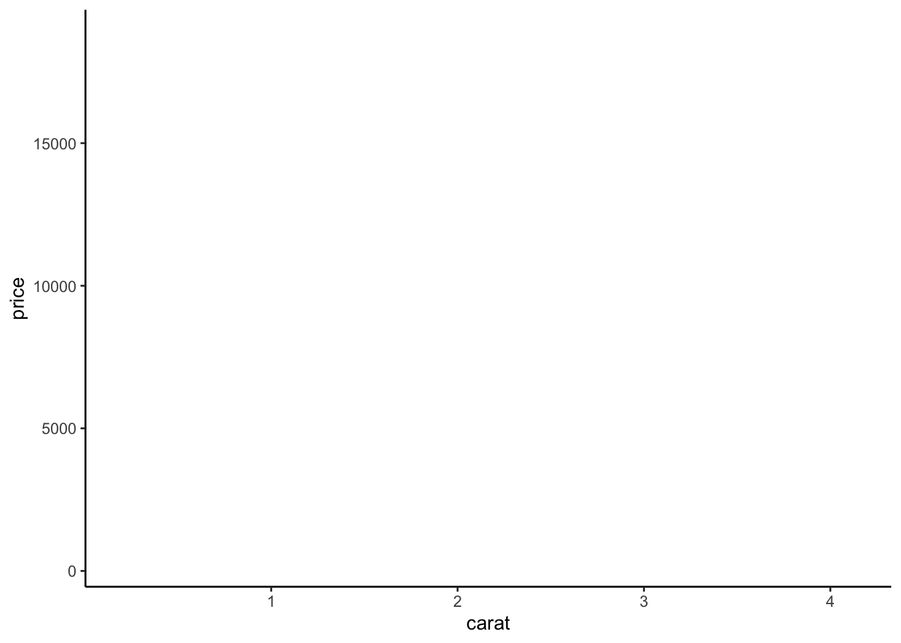
ggplot(diamonds2)+aes(x=carat,y=price)+geom_point() #bon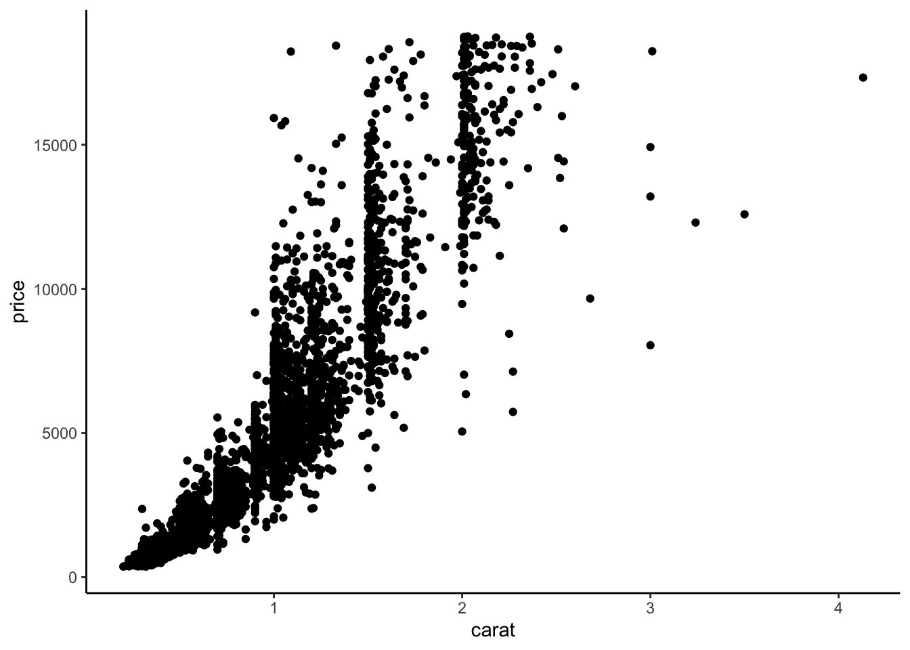
Exercice 4.5 (Premiers graphes ggplot) L’objectif est de se familiariser avec la syntaxe ggplot.
Tracer l’histogramme de la variable carat (utiliser
geom_histogram).ggplot(diamonds2)+aes(x=carat)+geom_histogram()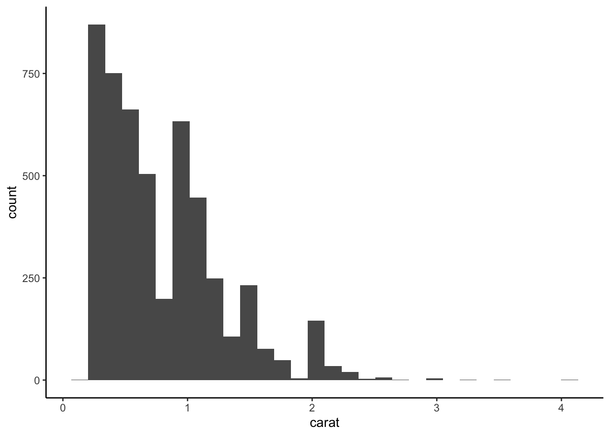
Tracer l’histogramme de la variable carat avec 10 classes (help(geom_histogram)).
ggplot(diamonds2)+aes(x=carat)+geom_histogram(bins=10)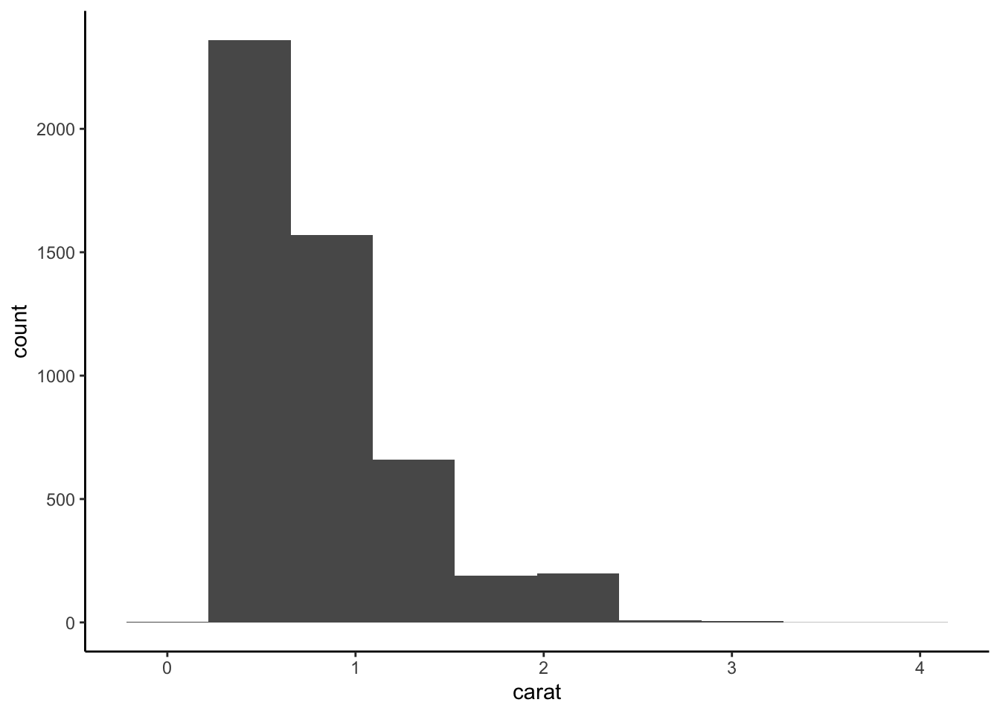
Tracer le diagramme en barres de la variable cut (utiliser geom_bar).
ggplot(diamonds2)+aes(x=cut)+geom_bar()
La syntaxe ggplot se construit à partir d’éléments indépendants qui définissent la grammaire de ggplot. Les principaux verbes sont :
- Data (
ggplot) : les données au format dataframe ou tibble - Aesthetics (
aes) : pour sépecifier les variables à représenter dans le graphe. - Geometrics (
geom_...) : le type de graphe (nuage de points, histogramme…). - Statistics (
stat_...) : utile pour spécifier des transformations des données nécessaires pour obtenir le graphe. - Scales (
scale_...) : pour controler les paramètres permettant d’affiner le graphe (changement de couleurs, paramètres des axes…).
Tous ces éléments sont reliés avec le symbole +.
4.2.2 Data et aesthetics
Ces deux verbes sont à utiliser pour tous les graphes ggplot. Le verbe ggplot servira à définir le jeu de données que l’on souhaite utiliser. Si le code est bien fait, nous n’aurons plus à utiliser le nom du jeu de données par la suite pour construire le graphe. Le verbe aes est quant à lui utile pour spécifier le nom des variables que l’on souhaite visualiser. Par exemple, pour le nuage de points price vs carat la syntaxe devra débuter par
ggplot(diamonds2)+aes(x=carat,y=price)Les variables peuvent également être utilisées pour colorier des points ou des barres, définir des tailles… Dans ce cas on pourra renseigner les arguments color, size, fill dans la fonction aes. Par exemple
ggplot(diamonds2)+aes(x=carat,y=price,color=cut)4.2.3 Geometrics
Ce verbe décrira le type de représentation souhaité. Pour un nuage de points, on utilisera par exemple geom_point :
ggplot(diamonds2)+aes(x=carat,y=price,color=cut)+geom_point()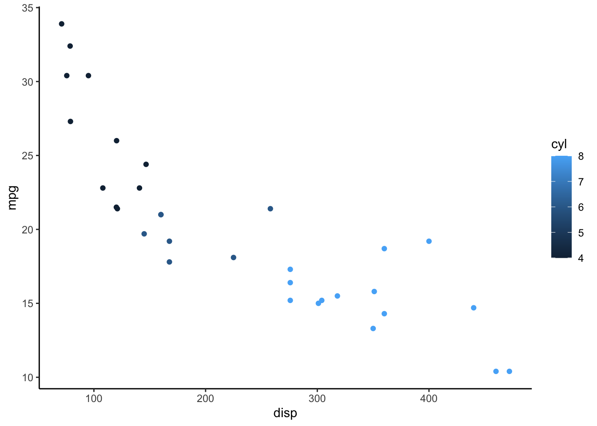
On observe que ggplot ajoute la légende automatiquement. Voici les principaux exemples de geometrics :
| Geom | Description | Aesthetics |
|---|---|---|
| geom_point() | nuage de points | x, y, shape, fill |
| geom_line() | Ligne (ordonnée selon x) | x, y, linetype |
| geom_abline() | Ligne | slope, intercept |
| geom_path() | Ligne (ordonnée par l’index) | x, y, linetype |
| geom_text() | Texte | x, y, label, hjust, vjust |
| geom_rect() | Rectangle | xmin, xmax, ymin, ymax, fill, linetype |
| geom_polygon() | Polygone | x, y, fill, linetype |
| geom_segment() | Segment | x, y, xend, yend, fill, linetype |
| geom_bar() | Diagramme en barres | x, fill, linetype, weight |
| geom_histogram() | Histogramme | x, fill, linetype, weight |
| geom_boxplot() | Boxplot | x, fill, weight |
| geom_density() | Densité | x, y, fill, linetype |
| geom_contour() | Lignes de contour | x, y, fill, linetype |
| geom_smooth() | Lisseur (linéaire ou non linéaire) | x, y, fill, linetype |
| Tous | color, size, group |
Exercice 4.6 (Diagrammes en barres) On étudie différentes façons de changer la couleur d’un diagramme en barres.
Tracer le diagramme en barres de la variable cut avec des barres bleues.
ggplot(diamonds2)+aes(x=cut)+geom_bar(fill="blue")Tracer le diagramme en barres de la variable cut avec une couleur pour chaque modalité de cut ainsi qu’une légende qui permet de repérer la couleur.
ggplot(diamonds2)+aes(x=cut,fill=cut)+geom_bar()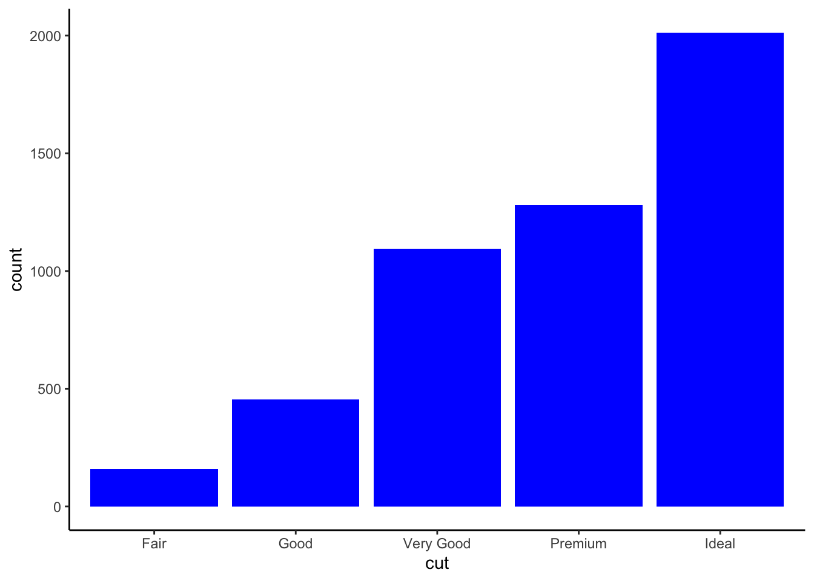
Tracer le diagramme en barres de la variable cut avec une couleur pour chaque modalité que vous choisirez (et sans légende).
ggplot(diamonds2)+aes(x=cut)+geom_bar(fill=c("blue","red","green","yellow","black"))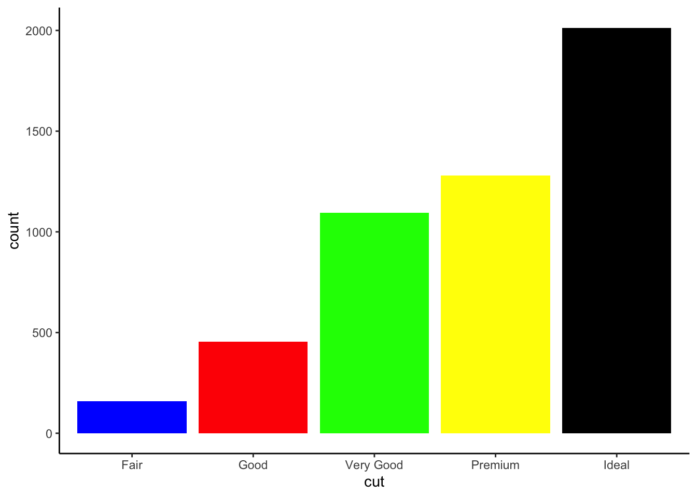
4.2.4 Statistics
Certains graphes nécessitent des calculs d’indicateurs statistiques pour être tracé. C’est par exemple le cas pour le diagramme en barres et l’histogramme où il faut calculer des hauteurs de rectangles ou barres. Les transformations simples peuvent se faire rapidement, on peut par exemple tracer la fonction sinus avec
D <- data.frame(X=seq(-2*pi,2*pi,by=0.01))
ggplot(D)+aes(x=X,y=sin(X))+geom_line()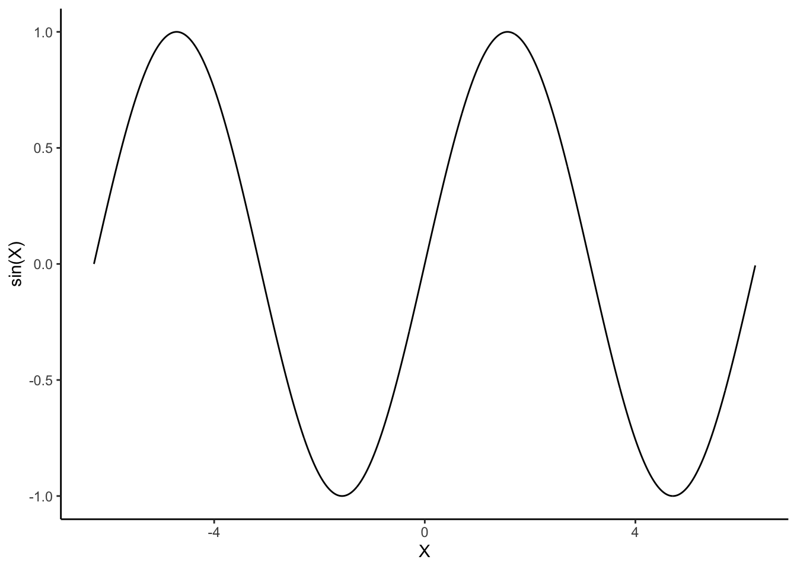
La transformation est spécifiée dans la fonction aes. Pour des transformations plus complexes, nous devons utiliser des statistics. Une fonction stat permet de définir des nouvelles variables à partir du jeu de données initial, il est ensuite possible de représenter ces nouvelles variables.
Par exemple, la fonction stat_bin, qui est utilisée par défaut pour construire des histogrammes, produit les variables suivantes :
count, le nombre d’observations dans chaque classes.density, la valeur de la densité des observations dans chaque classe (fréquance divisée par largeur de la classe).x, le centre de la classe.
Par défaut geom_histogram fait appel à cette fonction stat_binet représente sur l’axe \(y\) le nombre d’observations dans chaque classe (la variable count).
ggplot(diamonds2)+aes(x=price)+geom_histogram(bins=40)
Si on souhaite une autre variable issue de stat_bin, comme par exemple la densité, il faudra utiliser
ggplot(diamonds2)+aes(x=price,y=..density..)+geom_histogram(bins=40)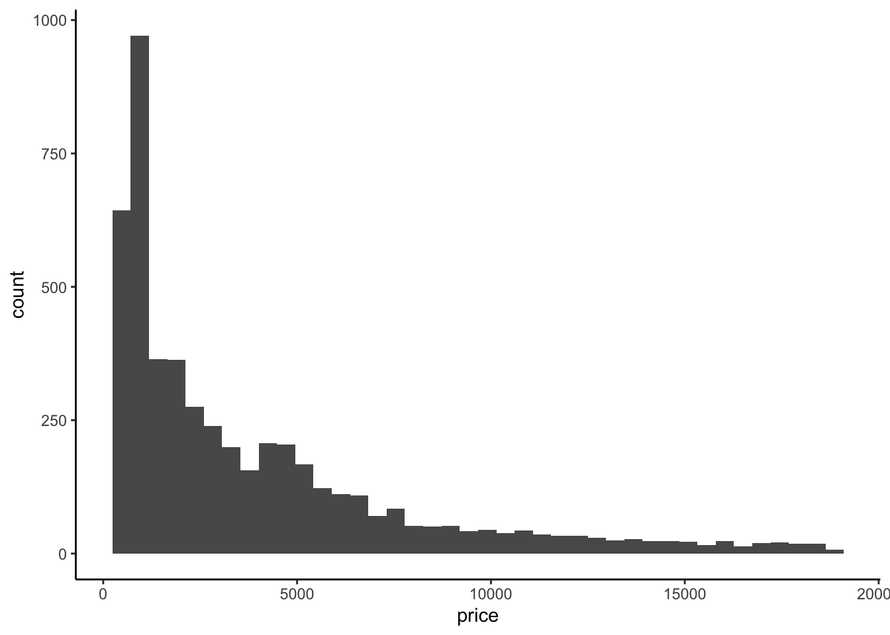
Il est possible d’utiliser les fonctions stat_ à la place des geom_ pour certaines représentations. Chaque fonction stat_ possède par défaut un geom_ et réciproquement. On peut par exemple obtenir le même graphe que précédemment avec
ggplot(diamonds2)+aes(x=price,y=..density..)+stat_bin()Voici quelques exemple de fonctions stat_
| Stat | Description | Paramètres |
|---|---|---|
| stat_identity() | aucune transformation | |
| stat_bin() | Count | binwidth, origin |
| stat_density() | Density | adjust, kernel |
| stat_smooth() | Smoother | method, se |
| stat_boxplot() | Boxplot | coef |
stat et geom ne sont pas toujours simples à combiner. Nous recommandons d’utiliser geom lorsqu’on débute avec ggplot, les statisticspar défaut ne doivent en effet être changés que rarement.
:::{.exercise exo-stat1, name=“Diagramme en barres "très simple"…”}
On considère une variable qualitative \(X\) dont la loi est donnée par \[P(X=\text{red})=0.3,\ P(X=\text{blue})=0.2,\ P(X=\text{green})=0.4,\ P(X=\text{black})=0.1\] Représenter cette distribution de probabilité avec un diagramme en barres.
X <- data.frame(X1=c("red","blue","green","black"),prob=c(0.3,0.2,0.4,0.1))
ggplot(X)+aes(x=X1,y=prob,fill=X1)+geom_bar(stat="identity")+
labs(fill="Couleur")+xlab("")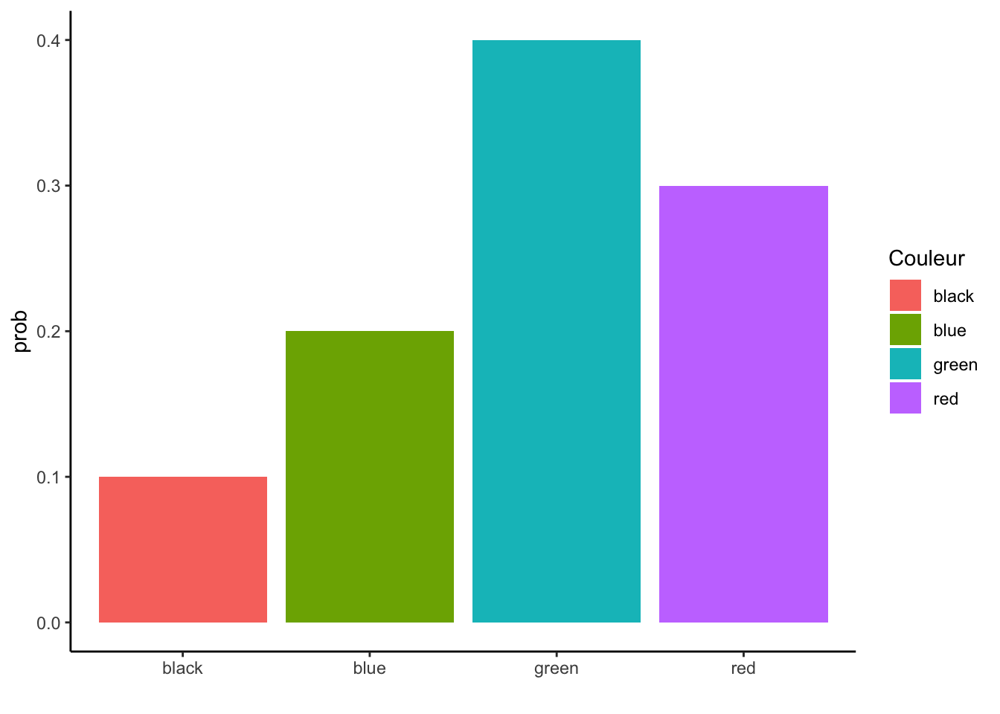
:::
Exercice 4.7 (Lissage) On étudie différentes façons de visualiser un lissage.
Représenter le lissage non linéaire de la variable
pricecontre la variablecaratà l’aide degeom_smoothpuis destat_smooth.ggplot(diamonds2)+aes(x=carat,y=price)+geom_smooth(method="loess")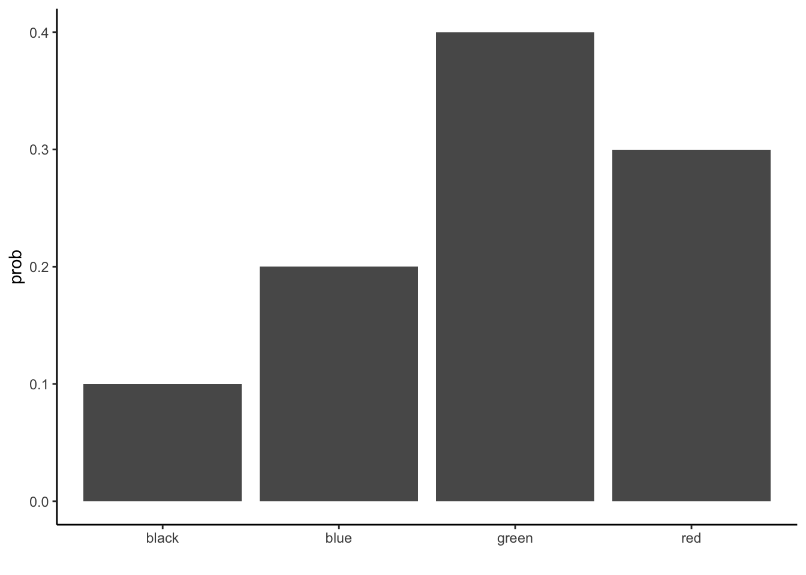
ggplot(diamonds2)+aes(x=carat,y=price)+stat_smooth(method="loess")
Même question mais avec une ligne en pointillés à la place d’un trait plein.
ggplot(diamonds2)+aes(x=carat,y=price)+geom_smooth(method="loess",linetype="dotted")
ggplot(diamonds2)+aes(x=carat,y=price)+stat_smooth(method="loess",geom="point")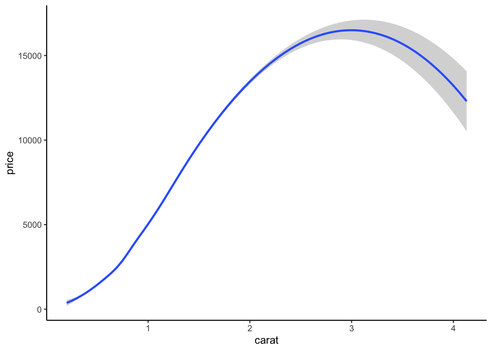
4.2.5 Scales
Les échelles (scales) controlent tout un tas d’options telles que des changements de couleurs, d’échelles ou de limites d’axes, de symboles, etc… L’utilisation n’est pas simple et nécessite de la pratique. On utilise généralement ce verbe à la dernière étape de construction du graphe. La syntaxe est définie comme suit :
- début :
scale_. - ajout de l’aesthetics que l’on souhaite modifier (
color_,fill_,x_). - fin : nom de l’échelle (
manual,identity…)
Par exemple,
ggplot(diamonds2)+aes(x=carat,y=price,color=cut)+geom_point()+
scale_color_manual(values=c("Fair"="black","Good"="yellow",
"Very Good"="blue","Premium"="red","Ideal"="green"))Voici quelques exemples des principales échelles :
| aes | Discret | Continu |
|---|---|---|
| Couleur (color et fill) | brewer | gradient |
| - | grey | gradient2 |
| - | hue | gradientn |
| - | identity | |
| - | manual | |
| Position (x et y) | discrete | continous |
| - | date | |
| Forme | shape | |
| - | identity | |
| - | manual | |
| Taille | identity | size |
| - | manual |
Nous présentons quelques exemples d’utilisation des échelles :
Couleur dans un diagramme en barres
p1 <- ggplot(diamonds2)+aes(x=cut)+geom_bar(aes(fill=cut)) p1On change la couleur en utilisant la palette Purples :
p1+scale_fill_brewer(palette="Purples")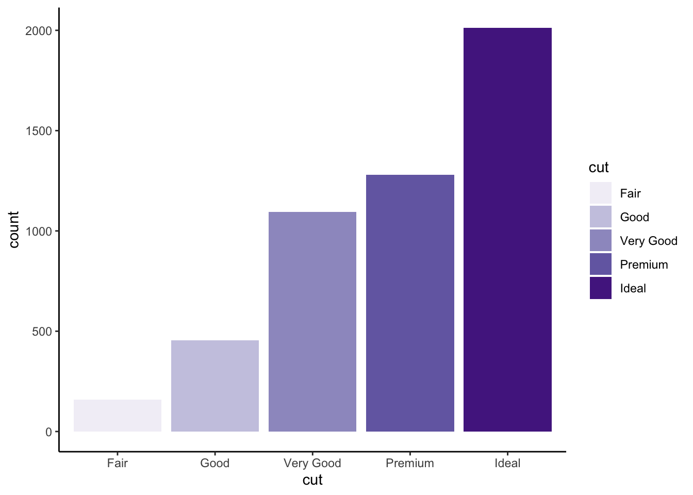
Gradient de couleurs pour un nuage de points :
p2 <- ggplot(diamonds2)+aes(x=carat,y=price)+geom_point(aes(color=depth)) p2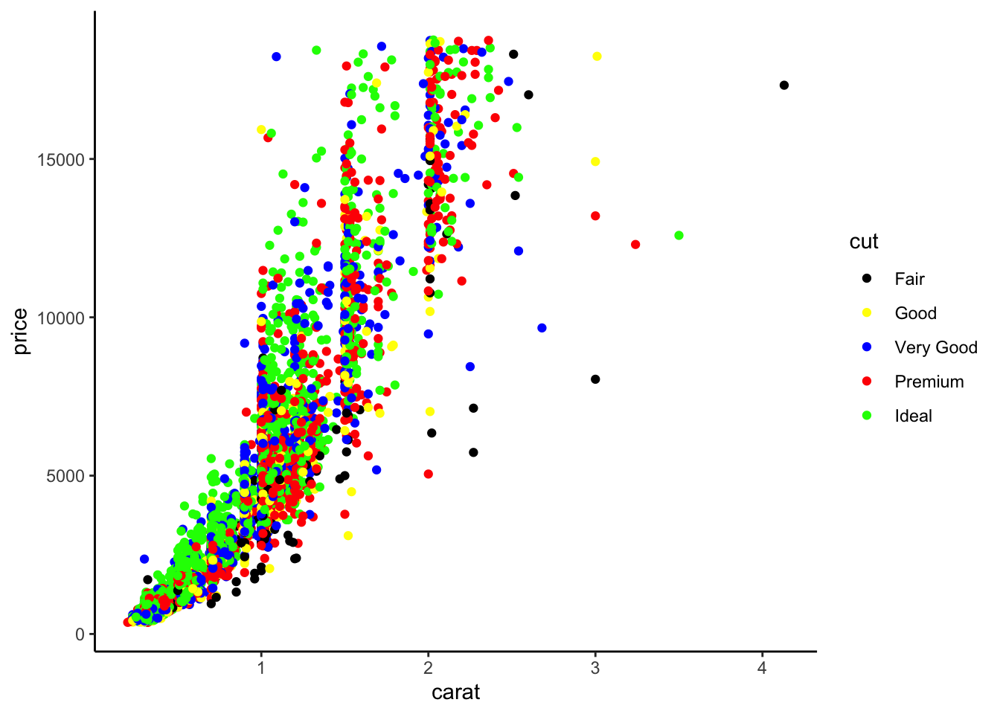 On change le gradient de couleur
p2+scale_color_gradient(low="red",high="yellow")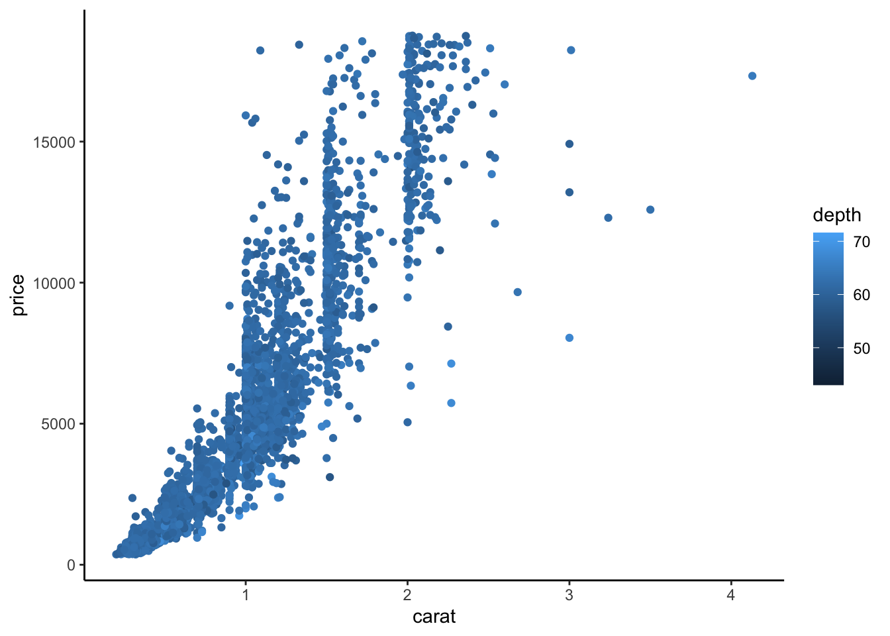
Modifications sur les axes
p2+scale_x_continuous(breaks=seq(0.5,3,by=0.5))+ scale_y_continuous(name="prix")+ scale_color_gradient("Profondeur")
4.2.6 Group et facets
ggplot permet de faire des représentations pour des groupes d’individus. On procède généralement de deux façons différentes :
- visualisation de sous groupes sur le même graphe, on utilise l’option
groupdans le verbe aes ; - visualisation de sous groupes sur des graphes différents, on utilise le verbe facet_wrap ou facet_grid.
Représentons ici (sur le même graphe) le lisseur price vs carat pour chaque modalité de cut
ggplot(diamonds2)+aes(x=carat,y=price,group=cut)+
geom_smooth(method="loess")
Pour obtenir cette représentation sur plusieurs fenêtres, on utilise
ggplot(diamonds2)+aes(x=carat,y=price)+
geom_smooth(method="loess")+facet_wrap(~cut)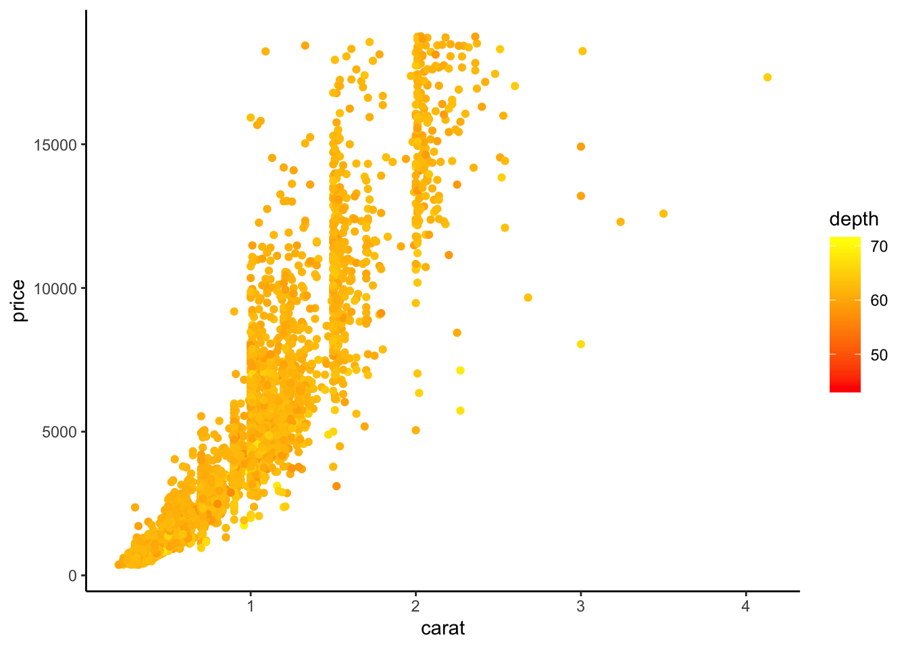
ggplot(diamonds2)+aes(x=carat,y=price)+
geom_smooth(method="loess")+facet_wrap(~cut,nrow=1)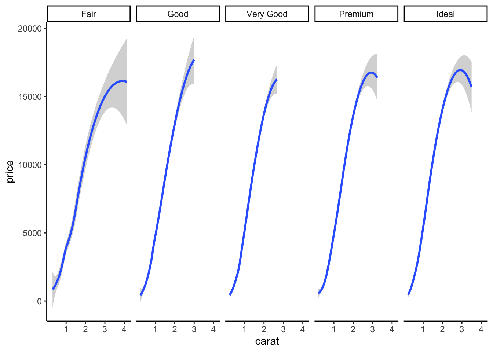
facet_grid et facet_wrap font des choses proches mais divisent la fenêtre d’une façon différente :
ggplot(diamonds2)+aes(x=carat,y=price)+geom_point()+
geom_smooth(method="lm")+facet_grid(color~cut)ggplot(diamonds2)+aes(x=carat,y=price)+geom_point()+
geom_smooth(method="lm")+facet_wrap(color~cut)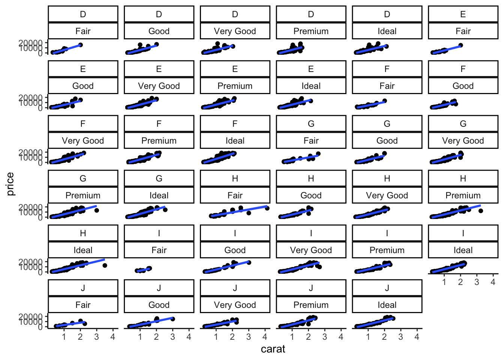
4.3 Compléments
La syntaxe ggplot est définie selon le schéma :
ggplot()+aes()+geom_()+scale_()Elle est très flexible, on peut par exemple spécifier les variables de aes dans les verbes ggplot ou geom_ :
ggplot(diamonds2)+aes(x=carat,y=price)+geom_point()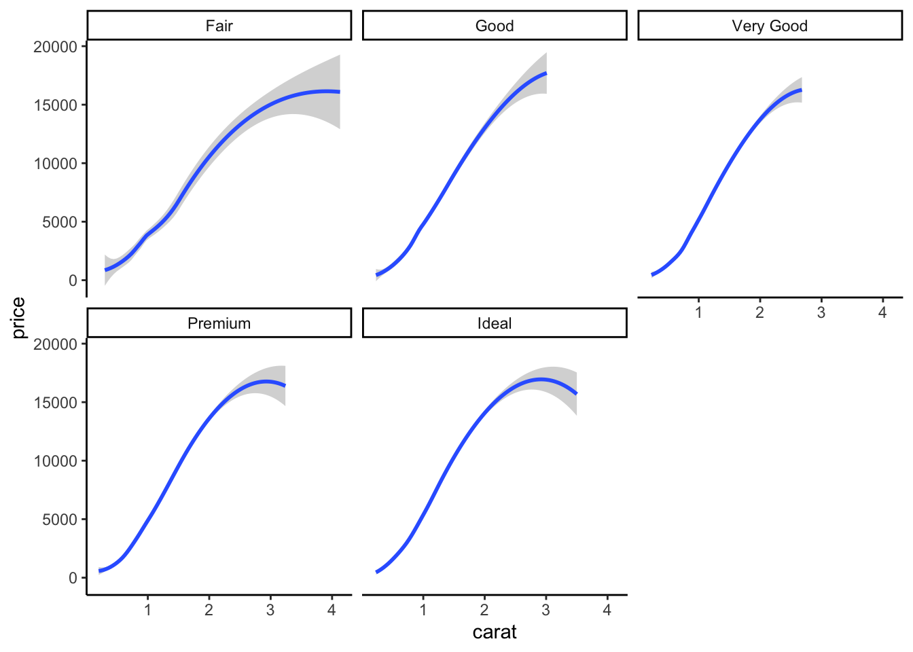
ggplot(diamonds2,aes(x=carat,y=price))+geom_point()
ggplot(diamonds2)+geom_point(aes(x=carat,y=price))
Ceci peut se révéler très utile lorsqu’on utilise des aes différents dans les geom_.
On peut aussi construire un graphe à l’aide de différents jeux de données :
X <- seq(-2*pi,2*pi,by=0.001)
Y1 <- cos(X)
Y2 <- sin(X)
donnees1 <- data.frame(X,Y1)
donnees2 <- data.frame(X,Y2)
ggplot(donnees1)+geom_line(aes(x=X,y=Y1))+
geom_line(data=donnees2,aes(x=X,y=Y2),color="red")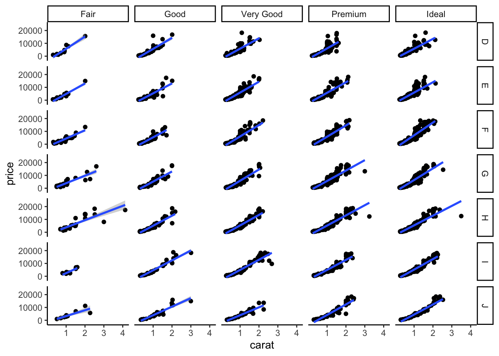
Il existe d’autres fonctions ggplot :
- ggtitle pour ajouter un titre.
- ggsave pour sauver un graphe.
- theme_ pour changer le theme du graphe.
p <- ggplot(diamonds2)+aes(x=carat,y=price,color=cut)+geom_point()
p+theme_bw()
p+theme_classic()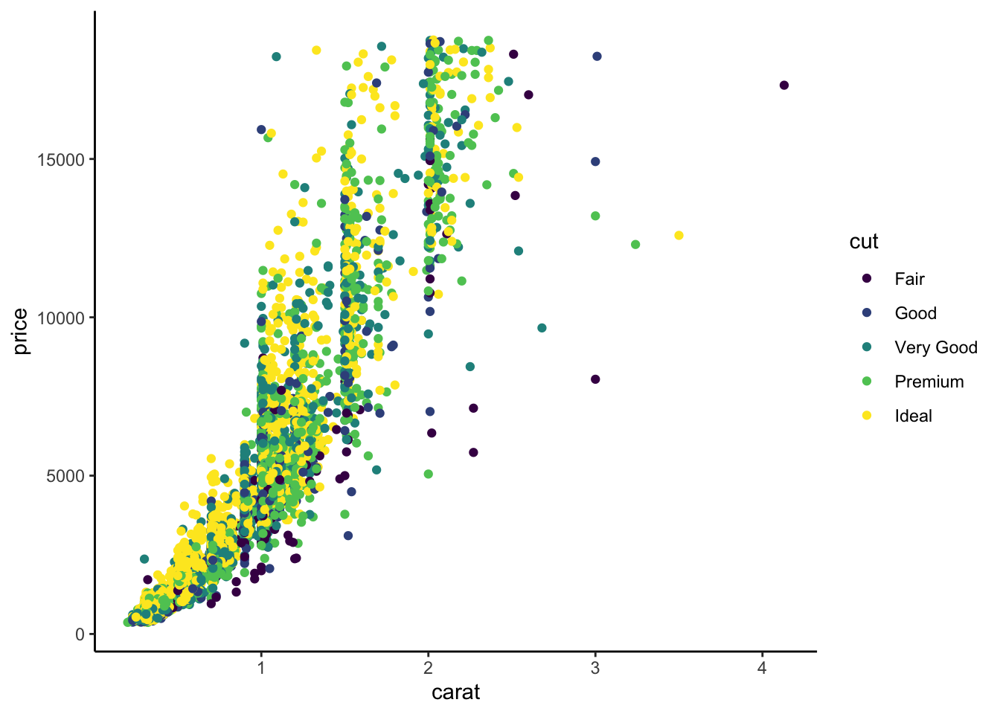
p+theme_grey()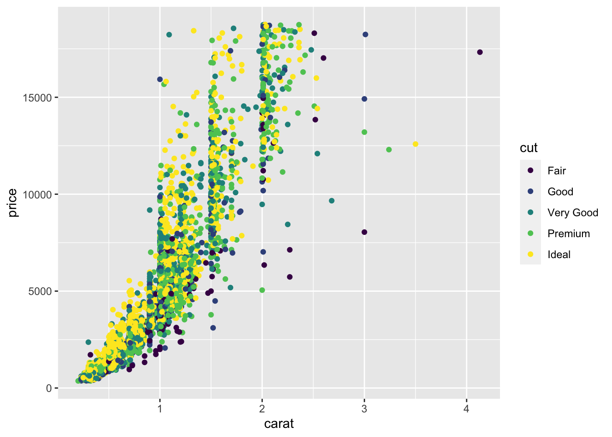
p+theme_bw()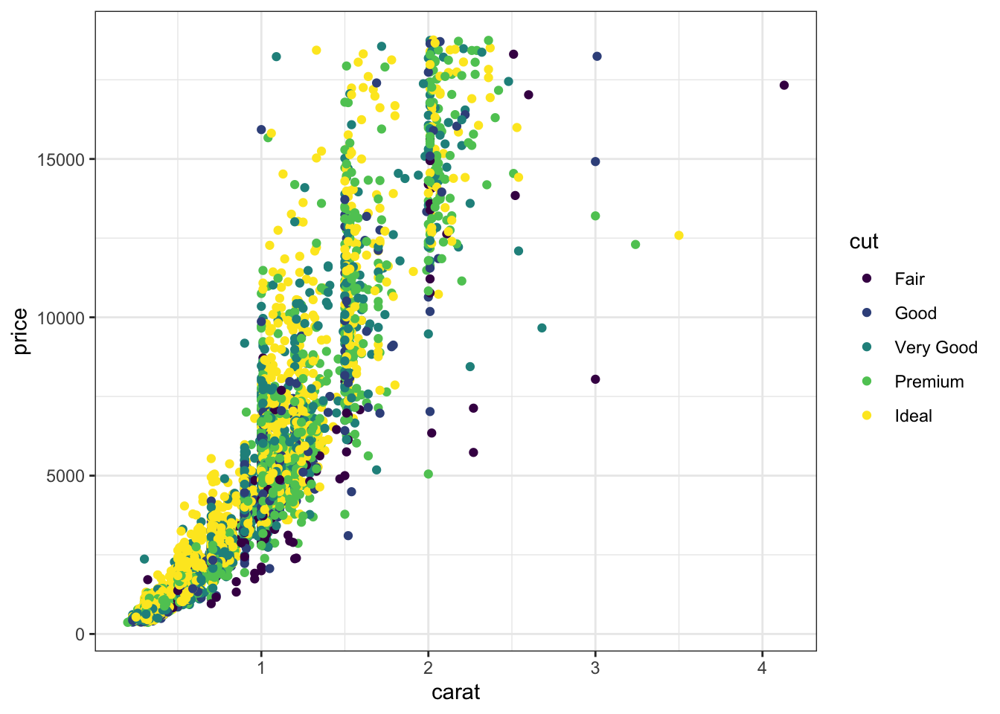
D’autres thèmes sont disponibles dans le package ggtheme. On pourra également parler de la fonction set_theme qui permet de modifier le thème par défaut pour un document Markdown.
4.4 Quelques exercices supplémentaires
Exercice 4.8 (Fonctions cosinus et sinus) L’objectif est de visualiser les fonctions sinus et cosinus de plusieurs façons.
Tracer les fonctions sinus et cosinus. On utilisera tout d’abord deux jeux de données : un pour le sinus, l’autre pour le cosinus.
X <- seq(-2*pi,2*pi,by=0.001) Y1 <- cos(X) Y2 <- sin(X) donnees1 <- data.frame(X,Y1) donnees2 <- data.frame(X,Y2) ggplot(donnees1)+geom_line(aes(x=X,y=Y1))+ geom_line(data=donnees2,aes(x=X,y=Y2),color="red")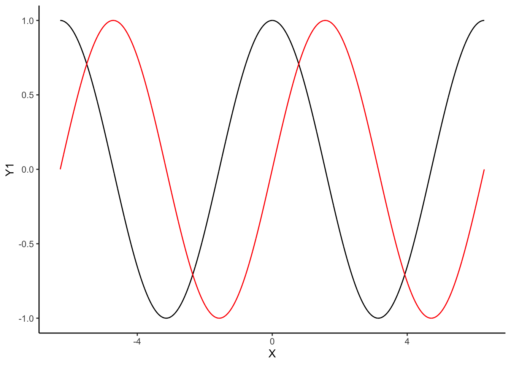
Faire la même chose avec un jeu de données et deux appels à la fonction
geom_line. On pourra ajouter une légende.donnees <- data.frame(X,Y1,Y2) ggplot(donnees)+aes(x=X,y=Y1)+geom_line()+ geom_line(aes(y=Y2),color="red")
#ou pour la légende ggplot(donnees)+aes(x=X,y=Y1)+geom_line(aes(color="cos"))+ geom_line(aes(y=Y2,color="sin"))+labs(color="Fonction")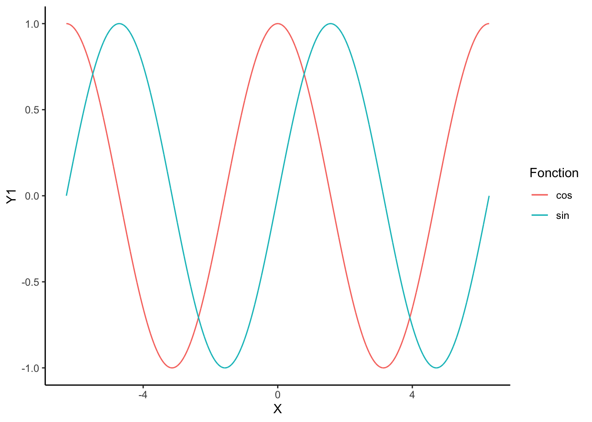
Faire la même chose avec un jeu de données et un seul appel à
geom_line. On pourra utiliser la fonction pivot_longer du tidyverse.df <- data.frame(X,cos=Y1,sin=Y2) df1 <- df %>% pivot_longer(cols=c(cos,sin), names_to = "Fonction", values_to = "value") #ou df1 <- df %>% pivot_longer(cols=-X, names_to = "Fonction", values_to = "value") ggplot(df1)+aes(x=X,y=value,color=Fonction)+geom_line()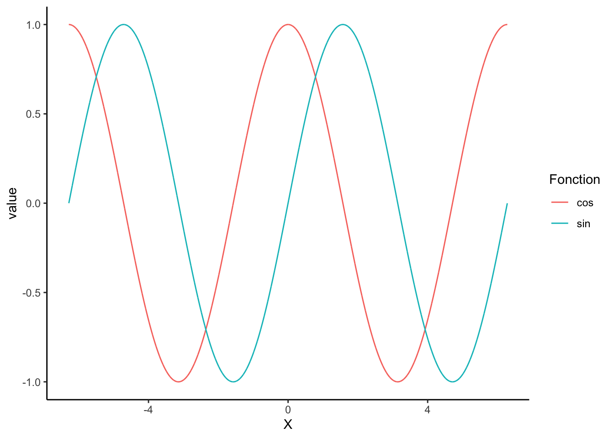
Tracer les deux fonctions sur deux fenêtres graphiques (utiliser
facet_wrap).ggplot(df1)+aes(x=X,y=value)+geom_line()+facet_wrap(~Fonction)Faire la même chose avec la fonction
grid.arrangedu package gridExtra.library(gridExtra) p1 <- ggplot(donnees1)+aes(x=X,y=Y1)+geom_line() p2 <- ggplot(donnees2)+aes(x=X,y=Y2)+geom_line() grid.arrange(p1,p2,nrow=1)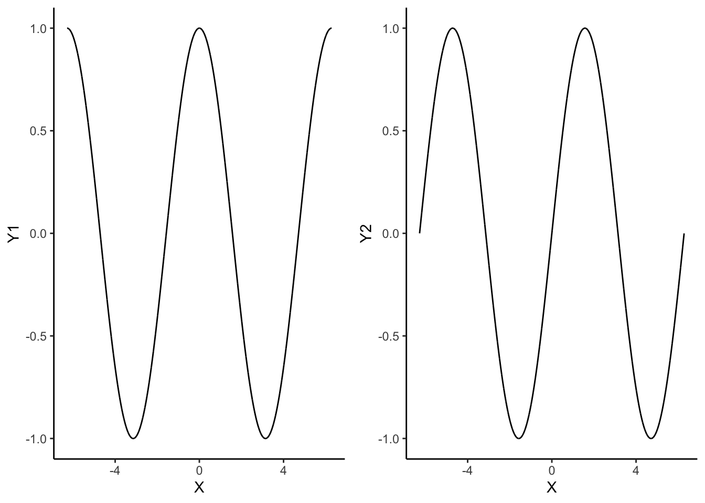
Exercice 4.9 (Différents graphes) On considère les données mtcars
data(mtcars)
summary(mtcars)
mpg cyl disp
Min. :10.40 Min. :4.000 Min. : 71.1
1st Qu.:15.43 1st Qu.:4.000 1st Qu.:120.8
Median :19.20 Median :6.000 Median :196.3
Mean :20.09 Mean :6.188 Mean :230.7
3rd Qu.:22.80 3rd Qu.:8.000 3rd Qu.:326.0
Max. :33.90 Max. :8.000 Max. :472.0
hp drat wt
Min. : 52.0 Min. :2.760 Min. :1.513
1st Qu.: 96.5 1st Qu.:3.080 1st Qu.:2.581
Median :123.0 Median :3.695 Median :3.325
Mean :146.7 Mean :3.597 Mean :3.217
3rd Qu.:180.0 3rd Qu.:3.920 3rd Qu.:3.610
Max. :335.0 Max. :4.930 Max. :5.424
qsec vs am
Min. :14.50 Min. :0.0000 Min. :0.0000
1st Qu.:16.89 1st Qu.:0.0000 1st Qu.:0.0000
Median :17.71 Median :0.0000 Median :0.0000
Mean :17.85 Mean :0.4375 Mean :0.4062
3rd Qu.:18.90 3rd Qu.:1.0000 3rd Qu.:1.0000
Max. :22.90 Max. :1.0000 Max. :1.0000
gear carb
Min. :3.000 Min. :1.000
1st Qu.:3.000 1st Qu.:2.000
Median :4.000 Median :2.000
Mean :3.688 Mean :2.812
3rd Qu.:4.000 3rd Qu.:4.000
Max. :5.000 Max. :8.000 Tracer l’histogramme de
mpg(on fera varier le nombre de classes).ggplot(mtcars)+aes(x=mpg)+geom_histogram()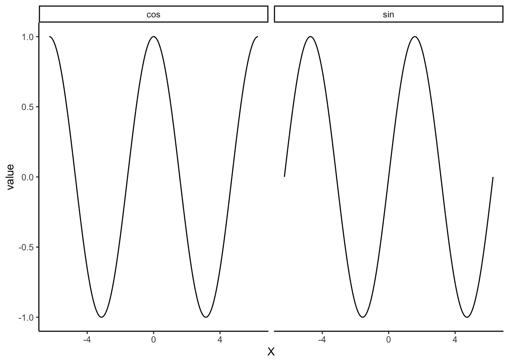
ggplot(mtcars)+aes(x=mpg)+geom_histogram(bins=10)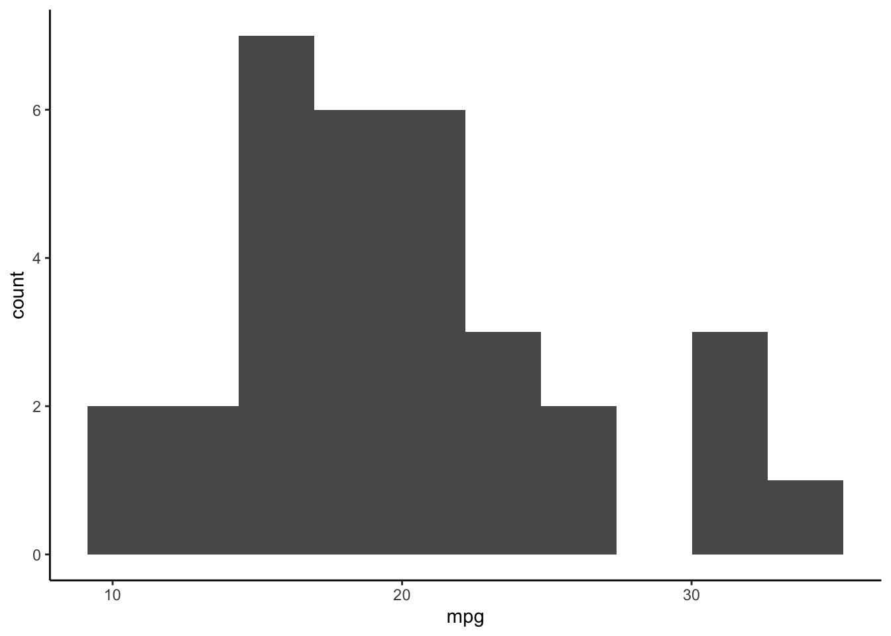
Tracer l’histogramme de la densité.
ggplot(mtcars)+aes(x=mpg,y=..density..)+geom_histogram(bins=10)Tracer le diagramme en barres de
cyl.ggplot(mtcars)+aes(x=cyl)+geom_bar()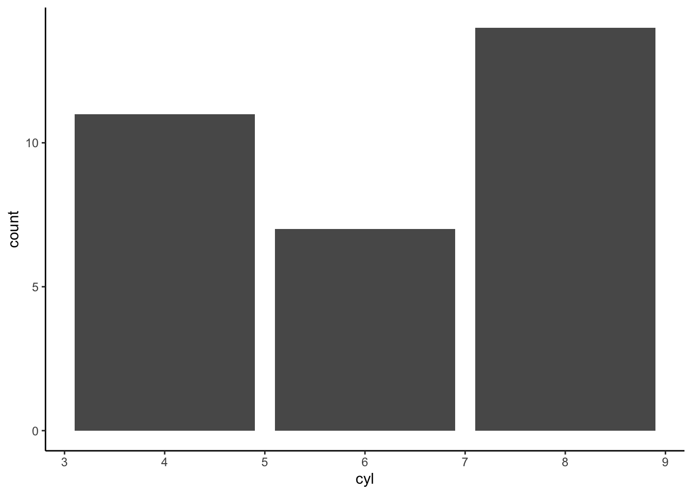
Tracer le nuage de points
disp vs mpgen utilisant une couleur différente pour chaque valeur decyl.ggplot(mtcars)+aes(x=disp,y=mpg,color=cyl)+geom_point()ggplot(mtcars)+aes(x=disp,y=mpg,color=as.factor(cyl))+geom_point()+labs(color="cyl")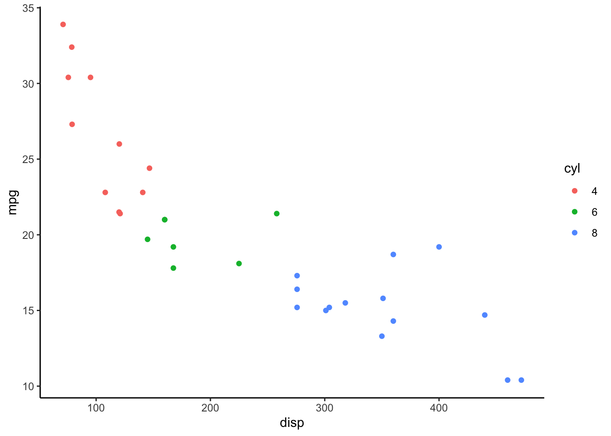
Ajouter le lisseur linéaire sur le graphe (un lisseur par modalité de
cyl).ggplot(mtcars)+aes(x=disp,y=mpg,color=as.factor(cyl))+geom_point()+ geom_smooth(method="lm")+labs(color="cyl")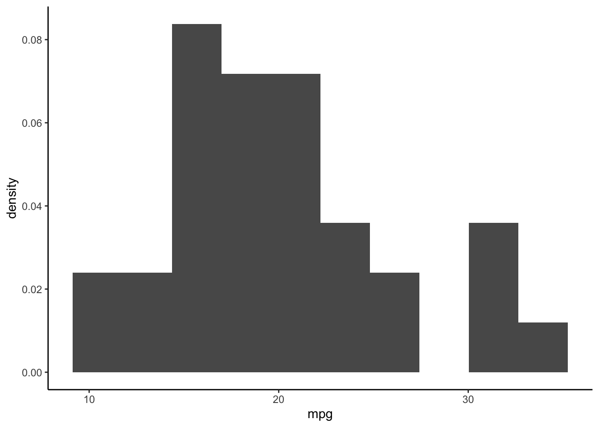
Exercice 4.10 (Résidus pour régression simple) On souhaite visualiser les résidus dans un modèle de régression simple.
Générer un échantillon \((x_i,y_i),i=1,\dots,100\) selon le modèle linéaire \[y_i=3+x_i+\varepsilon_i\] où les \(x_i\) sont i.i.d. de loi uniforme sur \([0,1]\) et les \(\varepsilon_i\) sont i.i.d. de loi gaussienne \(N(0,0.2^2)\) (utiliser runif et rnorm).
n <- 100 X <- runif(n) eps <- rnorm(n,sd=0.2) Y <- 3+X+eps D <- data.frame(X,Y)Tracer le nuage de points Y vs X et ajouter le lisseur linéaire.
On le fait d’abord “à la main” en calculant l’équation de la droite de régression.
model <- lm(Y~.,data=D) co <- coef(model) D$fit <- predict(model) co <- coef(lm(Y~.,data=D)) ggplot(D)+aes(x=X,y=Y)+geom_point()+ geom_abline(slope=co[2],intercept=co[1],color="blue")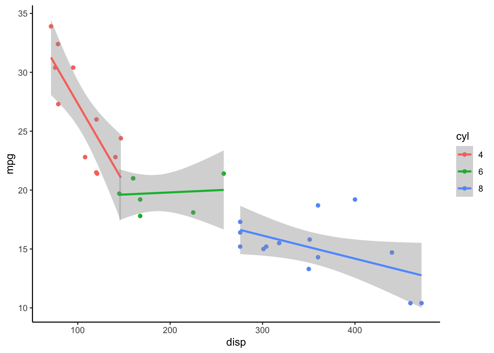
On peut avoir le tracé directement avec
geom_smooth.ggplot(D)+aes(x=X,y=Y)+geom_point()+geom_smooth(method="lm")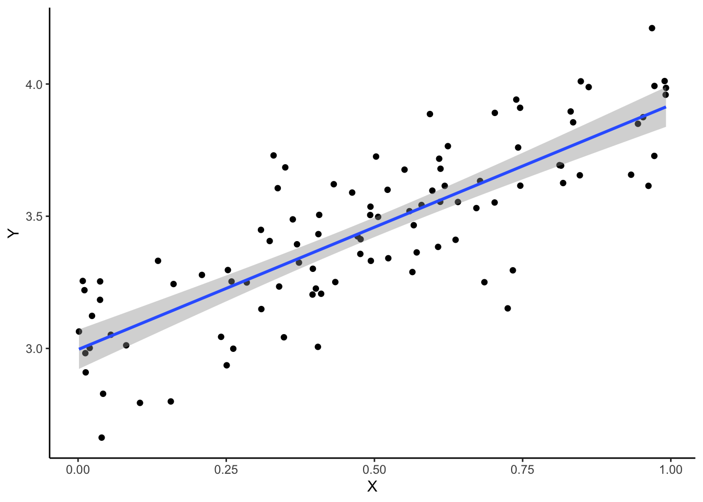
Représenter les résidus : on ajoutera une ligne verticale entre chaque point et la droite de lissage (utiliser geom_segment).
ggplot(D)+aes(x=X,y=Y)+geom_point()+geom_smooth(method="lm")+ geom_segment(aes(xend=X,yend=fit))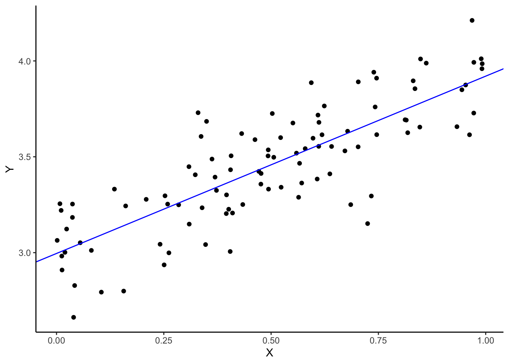
Exercice 4.11 (Challenge) On considère les données diamonds.
Tracer les graphes suivants (utiliser
coord_flippour le second).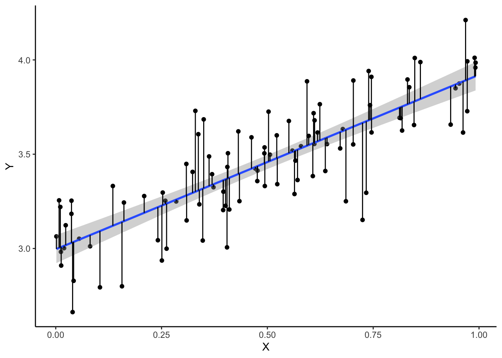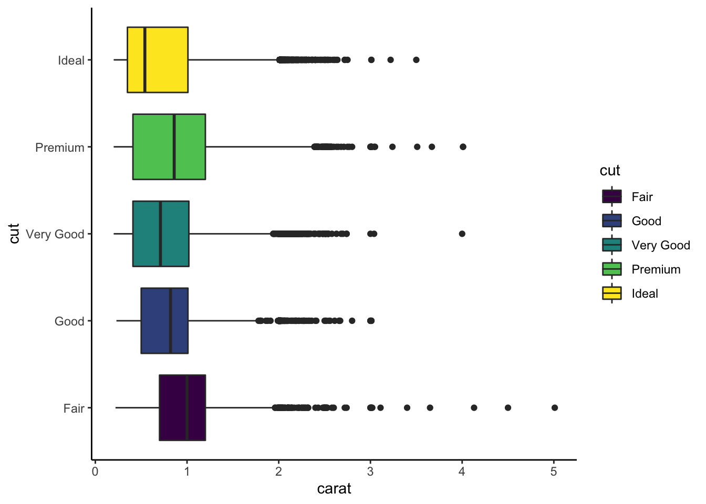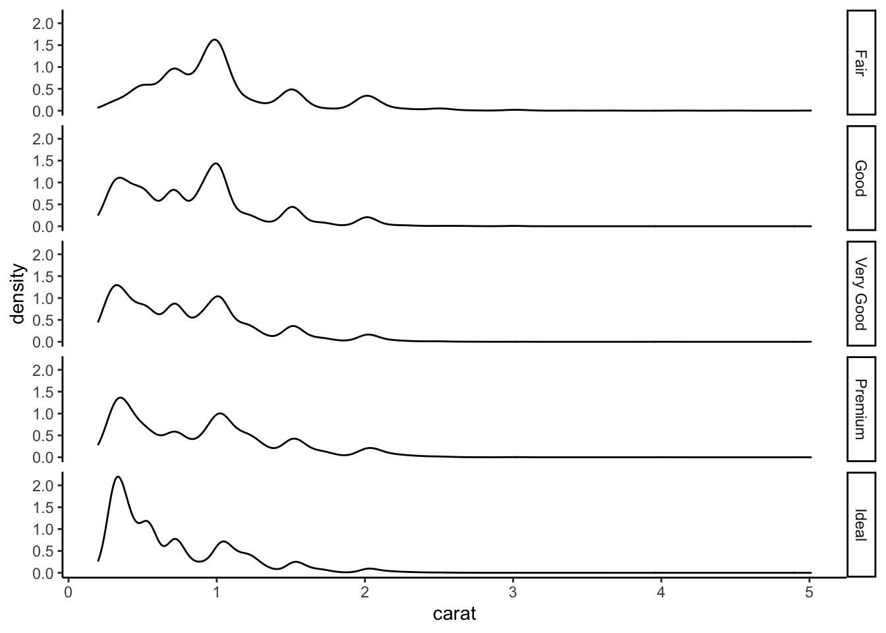
On obtient les graphes demandés avec :
ggplot(data=diamonds) + geom_boxplot(aes(x=cut,y=carat,fill=cut)) ggplot(data=diamonds) + geom_boxplot(aes(x=cut,y=carat,fill=cut)) + coord_flip() ggplot(data=diamonds) + geom_density(aes(x=carat,y=..density..)) + facet_grid(cut~.)Ajouter sur le troisième graphe les quartiles de la variable carat pour chaque valeur de cut. On utilisera une ligne verticale.
Q1 <- diamonds %>% group_by(cut) %>% summarize(q1=quantile(carat,c(0.25)),q2=quantile(carat,c(0.5)), q3=quantile(carat,c(0.75))) quantildf <- Q1 %>% pivot_longer(-cut,names_to="alpha",values_to="quantiles") ggplot(data=diamonds) + geom_density(aes(x=carat,y=..density..)) + facet_grid(cut~.) + geom_vline(data=quantildf,aes(xintercept=quantiles),col=alpha("black",1/2))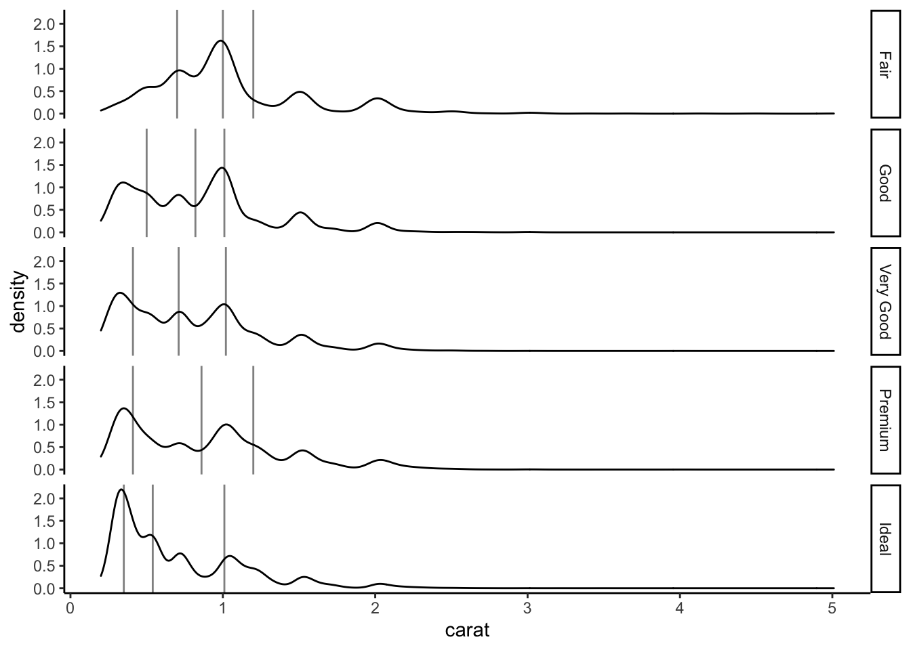
En déduire le graphe suivant (on utilisera le package ggstance).
On l’obtient avec
library(ggstance) ggplot(data=diamonds) + geom_boxploth(data=diamonds,aes(y=-0.5,x=carat,fill=cut)) + geom_density(aes(x=carat,y=..density..)) + facet_grid(cut~.) + geom_vline(data=quantildf,aes(xintercept=quantiles),col=alpha("black",1/2)) + ylab("")